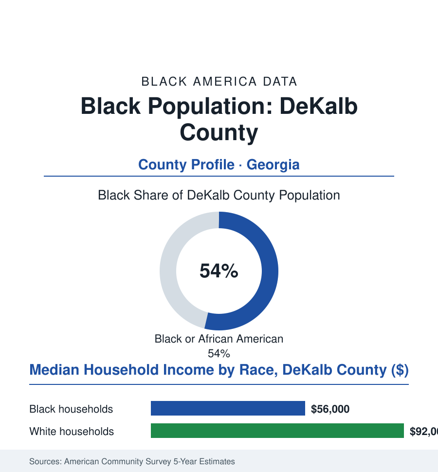

Black Cities
Black DeKalb County: 410,000 People on Atlanta's East Side
DeKalb is one of the three or four largest Black county populations in America — suburban, governed, and layered with history from Scottdale's mill to South DeKalb's cul-de-sacs.

DeKalb County's Black community numbers roughly 410,000 people — about 54% of some 765,000 residents — making this Atlanta suburb, by itself, one of the largest Black populations of any county in America, ahead of the total Black populations of most famous Black cities in this atlas. From Decatur's courthouse square to the subdivisions of South DeKalb, it is the suburban era's Black heartland with county-scale data. This article reads it. It is also, not incidentally, the county that anchors the eastern half of the most consequential Black metropolitan region in the country — the working half of Atlanta's Black geography that the downtown postcards leave out.
From Lynwood Park to South DeKalb
The county's Black history is older than its suburbia: the Scottdale mill village, the Beacon Hill community that Decatur's Black families built (and that the city's renewal era largely erased, its history preserved by the displaced families' own archives), the Lynwood Park neighborhood of Brookhaven — a Black community founded by the workers who built the white suburb around it, annexed and pressured across the decades. The modern Black DeKalb was built in the suburbanization waves the census atlases trace precisely: the 1970s through the 1990s, Black Atlantans following the era's universal script — the new subdivisions, the ranch houses and cul-de-sacs of the county's southern half, the mall at Stonecrest rising as South DeKalb's retail crown — until the county's politics tipped to match its demography, its commission, its school board, its judiciary, and its CEO's office entering the record of Black suburban governance alongside the Prince George's County file: the same experiment (majority-Black suburban self-government) run at Atlanta scale, with the same two-column results — the representation complete, the fiscal and service arguments continuing under new management. The county's internal diversity is its census signature: the north's affluent enclaves, the refugee capital of Clarkston at its eastern edge (the 'most diverse square mile' of the magazine profiles, its apartment blocks the immigrant file's Georgia chapter), Emory University and the CDC's headquarters anchoring its professional class, and a Black population itself layered — the old Decatur families, the suburban strivers of two generations, the Caribbean and African newcomers of Clarkston's spillover — sharing a county government and little else of daily life, per the segregation-within-diversity rows the metro data specialize in.
The County's Two Ledgers
The current data carry the suburban bargain's full complexity: the assets first — a Black median household income in the mid-fifty-thousands against a county homeownership base built in the low-interest decades, the school system's size making it among the largest Black-student districts in the nation (its outcomes debates the education file's standard material at uncommon scale), the MARTA east line threading the county into the region's economy, the film-and-TV production boom planting studios in the county's industrial parks (the Black creative workforce of the media file commuting to soundstages in the neighborhoods their grandparents desegregated). Against them, the metro's standard debits with DeKalb accents: the north-south income split inside the county nearly as stark as the region's (the white median in the low ninety-thousands), the aging first-generation suburbs' retail thinning along the Memorial Drive corridor, the water-and-sewer infrastructure debt (the federal consent decree's billions, its costs socialized across the rate base for a generation), and the cityhood movement — the new incorporations peeling affluent unincorporated areas from the county's tax base, in a sequence the municipal data present neutrally and the county's Black leadership reads as the fiscal version of the older secessions. The county's politics remain the demographic fact's working out: a Black-led government of three-quarters of a million people, its ballot results the region's bellwether, its choices — on the stadiums, the transit referenda, the development of its own southern half — the suburban era's Black power exercised at full county scale.
Reading DeKalb's Numbers
Four hundred ten thousand people: DeKalb County alone holds more Black Americans than all but a handful of the storied cities in this atlas — in ranch houses and garden apartments, under their own county government, in the suburbs the last century said were not for them. The census counts counties without ceremony. This one is a capital in everything but the name.
More in Black Cities
Black Atlanta: Population, Distribution, and Growth of a Black Metropolis
Metro Atlanta holds more than two million Black residents — roughly one in three, second only to New York. The suburban distribution, migration history, and composition of Black Atlanta in the census data.
Black New York: The Largest Black Population in America
The New York metropolitan area holds about 3.4 million Black residents — more than any metro in the nation — and the city itself about two million. The census profile.
Black Washington: The District and the Metro
The Washington metro holds about 1.6 million Black residents, and the District itself — long a majority-Black city — now records a Black share near 41 percent. The census profile.
Source: U.S. Census Bureau, 2020 Census and American Community Survey 5-year estimates; DeKalb County Government; Atlanta Regional Commission data.